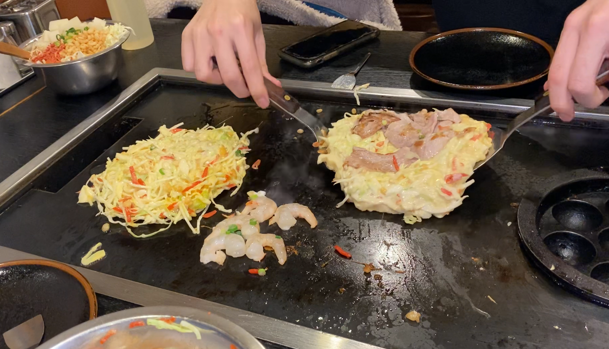
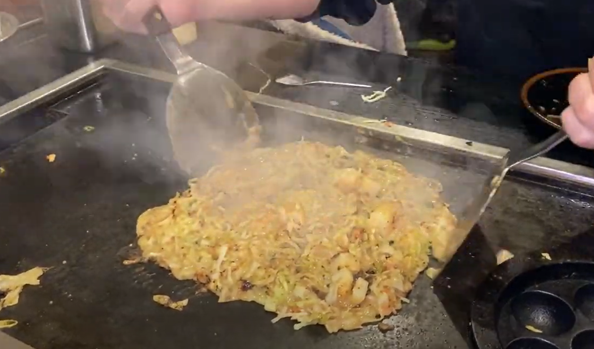
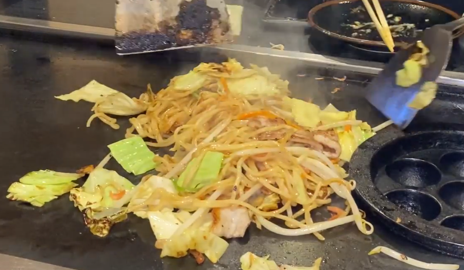

Okonomiyaki is a Japanese savory pancake. Many okonomiyaki restaurants also offer monja and yakisoba, and provide tabehoudai or nomihoudai courses for those who want to eat and drink a lot.
Menu
-

お好み焼き (Okonomiyaki)
the moment just before filipping
お好み焼き (Okonomiyaki)
The main ingredients include a batter made from flour, grated yam, shredded cabbage, eggs, and dashi (Japanese soup stock). People often customize their okonomiyaki with additional toppings like meat (usually pork or seafood), green onions, tenkasu (tempura scraps), and bonito flakes.
Order: Okonomiyaki, please.
お好み焼きを1つください。
お好み焼きを2つください。
お好み焼きを3つください。
お好み焼きを4つください。
お好み焼きを5つください。
お好み焼きを6つください。
お好み焼きを7つください。
お好み焼きを8つください。
お好み焼きを9つください。
-

もんじゃ (Monja)
the flavour of sizzling sound
もんじゃ (Monja)
The batter typically consists of flour, water, and dashi (Japanese soup stock), and it is mixed with various ingredients such as cabbage, seafood, meat, and vegetables.
Order: Monja, please.
もんじゃを1つください。
もんじゃを2つください。
もんじゃを3つください。
もんじゃを4つください。
もんじゃを5つください。
もんじゃを6つください。
もんじゃを7つください。
もんじゃを8つください。
もんじゃを9つください。
-

焼きそば (Yakisoba)
yakisoba with a nice golden-brown color
焼きそば (Yakisoba)
The main ingredients include yakisoba noodles and a mixture of vegetables like cabbage, carrots, and onions. Sometimes, it includes protein options such as pork, chicken, or seafood. The dish is flavored with a sweet and savory sauce.
Order: Yakisoba, please.
焼きそばを1つください。
焼きそばを2つください。
焼きそばを3つください。
焼きそばを4つください。
焼きそばを5つください。
焼きそばを6つください。
焼きそばを7つください。
焼きそばを8つください。
焼きそばを9つください。

ホッピー (Hoppy)
fop-flavoured beer-like drink
ホッピー (Hoppy)
Hoppy is a hop-flavored drink, and usually mixed with shochu (a Japanese distilled spirit). This combination gives a similar flavor to beer. The ratio of hoppy to shochu can be adjusted according to personal preference.
Order: Hoppy, please.
ホッピーを1つください。
ホッピーを2つください。
ホッピーを3つください。
ホッピーを4つください。
ホッピーを5つください。
ホッピーを6つください。
ホッピーを7つください。
ホッピーを8つください。
を9つください。

ビール (Beer)
cheers!
Course
-
食べ放題 (Tabehoudai)
Tabehoudai refers to a dining concept where customers pay a fixed price and are allowed to eat as much food as they want from a set menu within a specified time frame.
-
飲み放題 (Nomihoudai)
Similar to the concept of tabehoudai, nomihoudai involves paying a fixed price to have unlimited access to drinks for a specified period of time.
Cook
-
How to cook お好み焼き (Okonomiyaki)
-
How to cook もんじゃ (Monja)
-
How to cook 焼きそば (Yakisoba)
Restaurant
-

若竹日吉駅前店 (Wakatake Hiyoshi Station Branch)